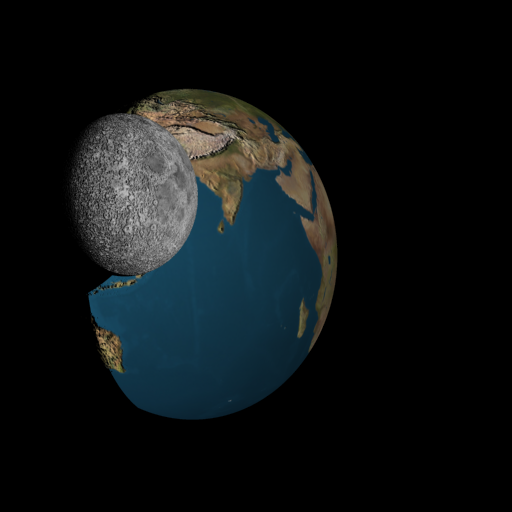
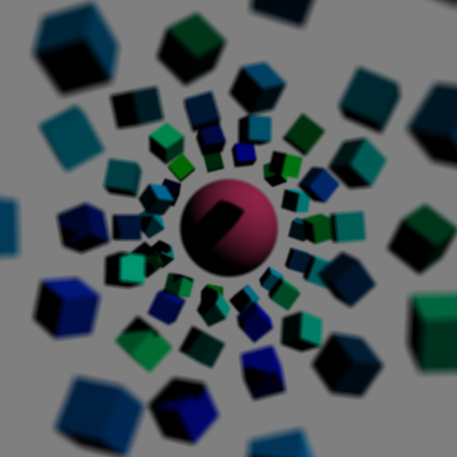
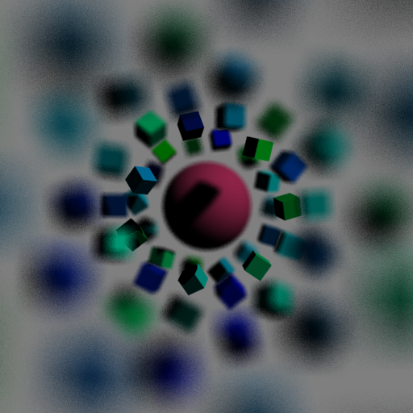
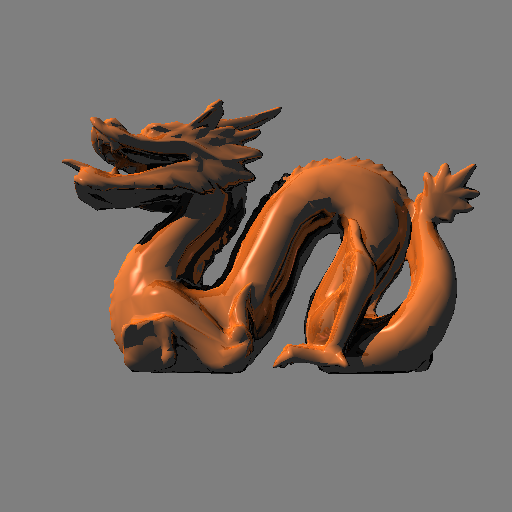
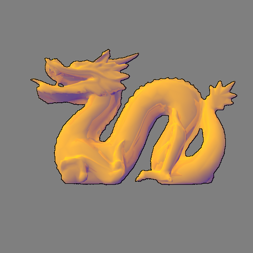
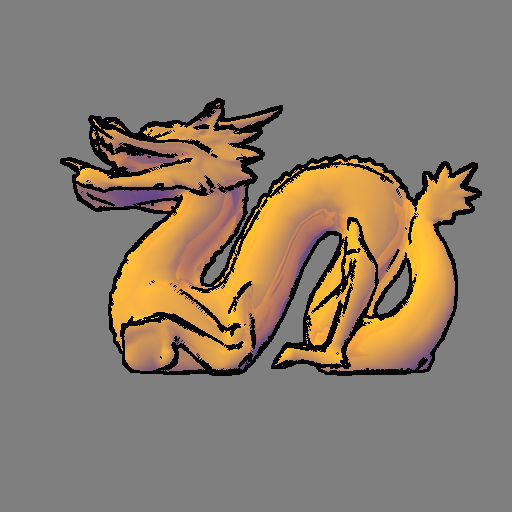

Mixing the real and unreal. The composition of photo realistic and non-photo realistic effects.
GalleryCreating beautiful images efficiently is the goal of computer graphics. Ray tracing is one of the techniques used due to its highly parallelization nature. It works by tracing the light rays "captured" by the camera lens in a time-reversed simulation. While most users consider realistic images to be beautiful, we will consider beautiful images differently. One of the characteristics of art is the exploration of expression. For example, dipole paintings are portraits where two conflicting objects are juxtaposed in a single composition in order to create meaning. Moreover, this technique often yields interesting results. Inspired by this technique, we explore the use of two conflicting concepts: photo and non-photo realism. We are interested in enhancing our current ray tracing to allow the creation of dipoles.
List of Accomplishments:
- Adaptive Sampling
- Texture Mapping
- Bump Mapping
- Depth of Field
- A non-photo realistic illumination model
- Edge rendering algorithm
Speed Enhancements
Adapting sampling
One of the inherent limitations in computer graphics is the discretized image plane. This limitation is the cause of jagged edges in any image. One technique commonly used to minimize this problem is sampling. In ray tracing, sampling can be accomplished by tracing multiple rays which originate from the neighborhood of the desired pixel location. The returned values are then averaged and the result is used as the color of the pixel. However, there are many circumstances when such expensive technique will not be beneficial. For example, when rendering a plain surface, sampling will only smooth the edges but the quality of the image will not improve much due to the low variance of in color. Thus, we should avoid the sampling overhead in similar situations. In our ray tracer, we implemented adaptive sampling as follows: we first sample min(sample_size^2, 10) rays. Then, if the variance in color is below a threshold, we stop sampling and return the current average.
Photo Realistic Effects
Texture Mapping & Bump Mapping
In order to render realistic objects, one must be capable of accurately depicting the objects' intricate characteristics. The first step to achieve this effect is to seamlessly wrap images of such features to the representing polyhedrons or polymeshes. For simple polyhedrons and spheres, we can use mathematical formulas to map a point in the three dimensional surface to a point (U,V) in a two dimensional plane. The UV coordinate is then used to access the color in the texture image and returns it as the color of the surface. For more complex models, we use trimeshes and their barycentric coordinates used to derive the UV coordinates.
Texture mapping provides a way to display intricate details, however, the renditions have this wrapping appearance. This is because the lighting on the surface is unaffected by the object's "texture". Hence, the illusion of realism is limited. We can build upon this technique by incorporating an image that details how the elevation changes. The goal is to change the directional lighting based on the object's texture. When a ray hits the surface, we approximate the gradient at the intersection point using the UV coordinates as indecies for the bump map. We use the gradient to perturb the normal of the surface and the new normal is then used in the calculations of the illumination model.
|  |
|
Depth of Field
While the latter techniques give more realistic renditions, there are effects that occur in real life that we are interested in. Depth of field (DoF) is one of them. DoF is an effect seen in physical cameras caused by some lens's properties. Due to the curvature of the lens, there exist a focus plane such that all the rays converge[3]. This results in sharp renditions of objects that intersect the plane. However, as objects distance themselves from such plane, P, the clarity of the rendition diminishes. This is because the rays are refracted in different directions and thus miss the "target" object. This effect is stronger as the diameter of the lens increases. In order to implement such effect, we are given a distance value. We use it along with the direction of the camera to derive P. Then, for each pixel we derive Y, the point of intersection of the camera view vector and P. Next, we sample points in the plane of the camera and for each point X, we trace a ray in the direction of XY. The returned values are then averaged and the result is used as the color of the pixel.
|  |  |
Non-photo Realistic Effects
Illumination Model
Literature mention that there are four distinguishing characteristics when describing non-photo realism: the use of edges, the use of warmness and coolness to complement the illusion of depth, lack of shadowing, and anisotropic renditions of metal objects [1]. Since edges are black, their presence limit the range of colors the actual illumination model can use. If the illumination model were touse dark, rich colors then the edges will eventually be blurred. The use of edges is further explained in the next section. In art theory, colors are associated with temperature: warm and cool. Reds, oranges, and yellows are warm while blue, greens, and purples are cool. Cool colors tend to reside to the background in the presence of warm colors and vice versa [1]. Thus, the proposed illumination model uses two different tones when rendering images. Complement-based tones and normal shading (darkening) of a color. However, to avoid over saturation of images only a fraction of the diffused coloring is used in the final product. For similar reasons, shadowing is non-existant. Finally, due to time constraints we were not able to approach anisotropicity the challenge.
|  |  |
Edge Drawing
Edges provide viewers large amounts of visual data [2]. Information about silhouettes and discontinuities can easily be rendered using free form shapes made by well selected lines [1]. In order to generate edges we implemented three heuristics. The first one is based on the idea that if an edge exists at pixel X then there exists a pixel Y in its neighborhood such that the difference between t_val(X) and t_val(Y) is above a threshold. This means that the ray associated with Y had a larger trajectory before hitting the first object, then it must have been a different object. Hence, X should be painted black since it belongs to the silhouette of its object. The second heuristic is based on a similar observation. If we consider the opposite face of the edge in the previous description, we can see that an edge also occurs when the angle between two faces is considerably larger than that of its neighbors. Thus, X should be painted black if there exist an edge in its neighborhood such that the angle between them is above some threshold. The final heuristic is based on another observation about silhouettes. If we consider a spherical surface, then it can be shown easily that there exist a circle that belongs to the surface such that the normals of the points are perpendicular the camera view. However, because discritized of the image plane, we relax this heuristic to consider X to belong to an edge if the angle of the surface and the camera direction is below a threshold.
|  |
References
- [1] Amy Gooch, Bruce Gooch, Peter Shirley, and Elaine Cohen. 1998. A non-photorealistic lighting model for automatic technical illustration. In Proceedings of the 25th annual conference on Computer graphics and interactive techniques (SIGGRAPH '98). ACM, New York, NY, USA, 447-452.
- [2] Michael A. Kowalski, Lee Markosian, J. D. Northrup, Lubomir Bourdev, Ronen Barzel, Loring S. Holden, and John F. Hughes. 1999. Art-based rendering of fur, grass, and trees. In Proceedings of the 26th annual conference on Computer graphics and interactive techniques (SIGGRAPH '99). ACM Press/Addison-Wesley Publishing Co., New York, NY, USA, 433-438.
- [3] Robert L. Cook, Thomas Porter, and Loren Carpenter. 1984. Distributed ray tracing.SIGGRAPH Comput. Graph.18, 3 (January 1984), 137-145.